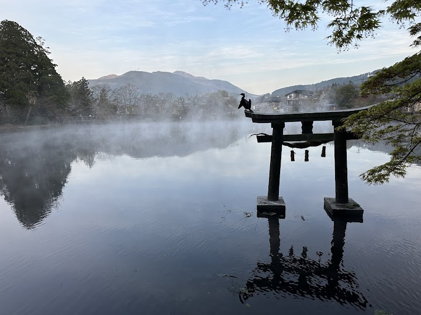
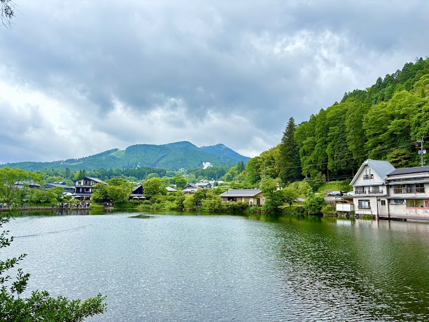
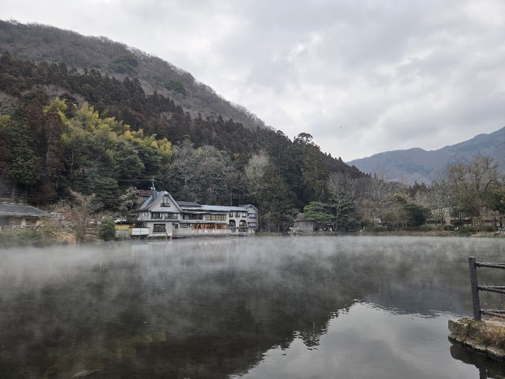
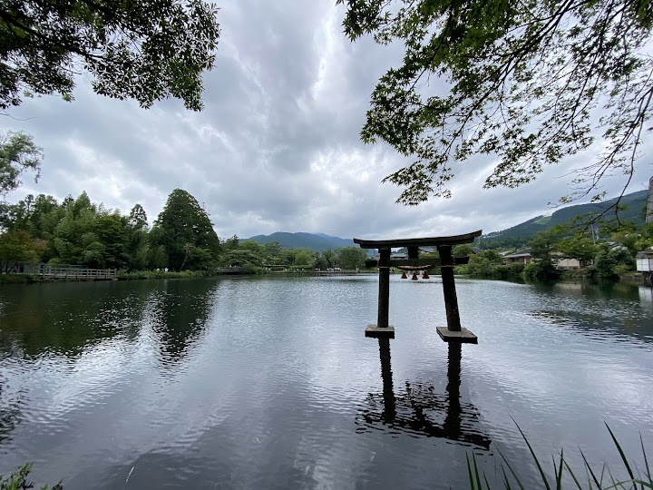
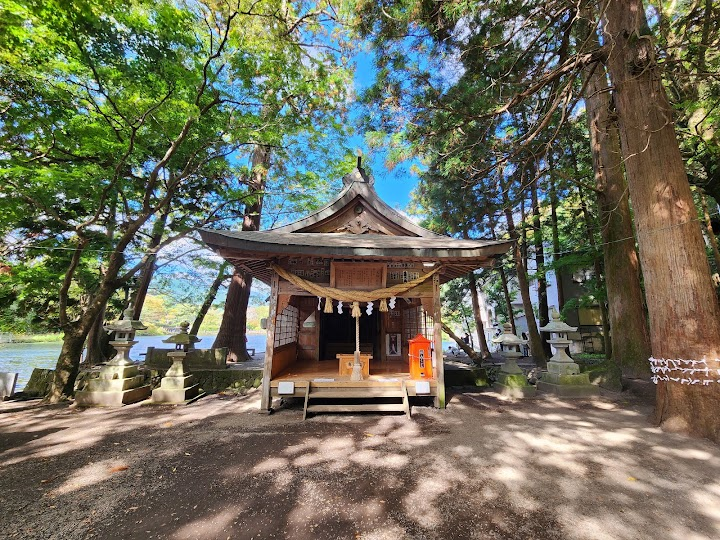

Lake Kinrin
Lake Kinrin is a small, picturesque lake in Yufuin famous for the morning mist that rises from its warm spring water, and a small shrine stands on its southern shore. It is a lovely place for a stroll, especially in the cold early morning.
Open in Google Maps (street view, more photos and reviews there)






Visitor tips on finding it and getting there
A Picturesque, Magical Escape in Yufuin – Simply Stunning! We came to Lake Kinrin for a stroll right after a lovely lunch, and it turned out to be the perfect highlight of our day. Though it’s a relatively short walk, every single angle looks like a living postcard. The water was unexpectedly clear—we even spotted a massive, vibrant golden koi swimming right up near the edge! What makes this walk truly unique is the stone torii gate standing right in the water at the far end of the lake. It is an incredibly serene place to just slow down. There are wooden benches shaded by massive ancient t
Lake Kinrin is one of the most peaceful and picturesque spots in Yufuin, offering a calm atmosphere that feels almost dreamlike. Although the lake itself is not very large, its beauty lies in the details and the unique ambiance that surrounds it. What makes Lake Kinrin especially special is the way it changes throughout the day. In the early morning, a gentle mist often rises from the surface of the water, created by the mix of warm spring water and cooler air. This gives the lake a soft, magical feeling that is hard to describe but unforgettable to experience. It’s quiet, slightly mysterious
Beautiful and peaceful spot! Lake Kinrin is a small but incredibly scenic lake surrounded by mountains and quiet walking paths. The atmosphere is calm and relaxing, perfect for a slow stroll or taking photos. If you visit early in the morning during colder months, you can see the famous mist rising from the warm spring water, which makes the whole place feel magical. There’s a small shrine by the water, cute cafés nearby, and plenty of spots to sit and enjoy the view. It only takes about 15–30 minutes to walk around, but it’s absolutely worth the visit if you’re in Yufuin. A peaceful escape wi